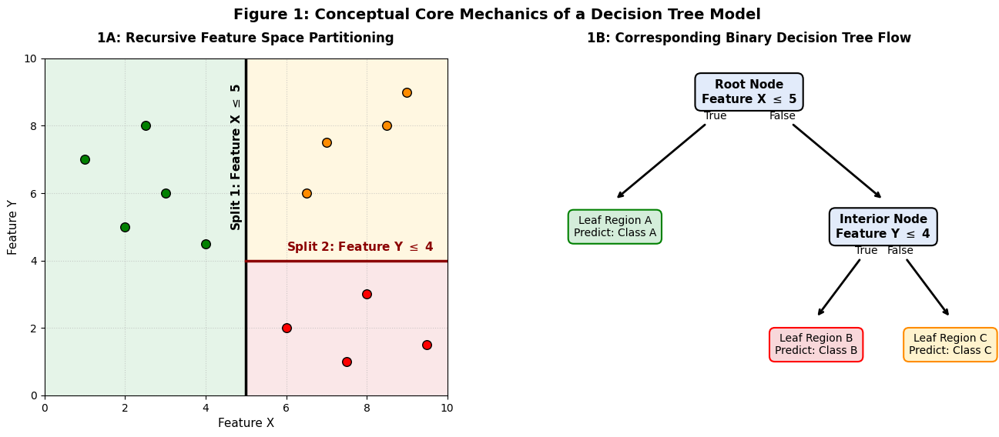
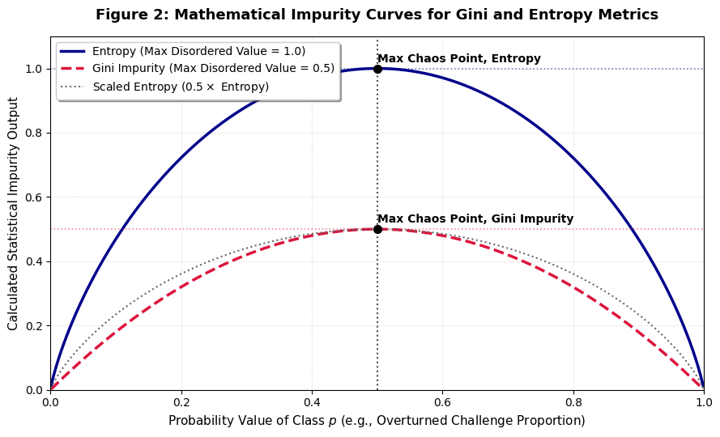
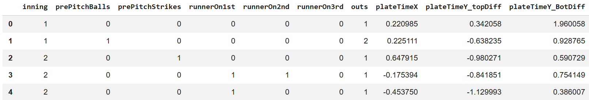
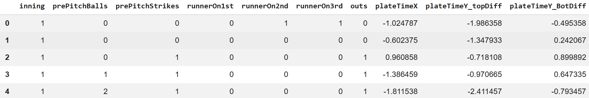

Decision Trees Overview
Decision Trees represent a powerful class of supervised non-parametric machine learning models used for both classification and regression tasks by recursively partitioning a dataset into increasingly homogeneous, or pure, subsets based on feature thresholds. Unlike probabilistic models such as Naive Bayes, a Decision Tree creates an explicit structure where internal nodes represent tests on specific independent attributes, branches denote the outcomes of those tests, and terminal leaf nodes deliver the final predicted class label. Within machine learning pipelines, this algorithmic approach provides a major structural advantage: it generates a highly transparent, readable sequence of logical checkpoints, as shown in Figure 1B below. This allows stakeholders to easily interpret exactly why a model predicts a specific outcome.

To unify the supervised learning analysis, the Decision Tree models will be evaluated across the exact same four predictive modeling tasks established in the Naive Bayes section. Holding feature sets and labeled target vectors uniform establishes a rigorous comparative framework to analyze how an iterative, non-parametric spatial-splitting model stacks up against a probabilistic, feature-independent baseline.
The Mathematics of Node Splits: Gini, Entropy, and Information Gain
To construct an optimal tree, the algorithm must determine the exact feature and spatial boundary line to split the data at any given node. This is achieved by evaluating mathematical metrics that quantify the statistical chaos, or impurity, of the target labels within that node. The tree greedily selects the split that minimizes downstream impurity, thereby maximizing the purity of the child nodes.
1. Gini Impurity
Gini Impurity measures the probability of a random element from a node being incorrectly labeled if it were randomly classified according to the label distribution in that subset. It spans a continuous range from 0.0 (a pure node, containing only one class) to 0.5 (a balanced node, perfectly split between two classes). The formula for Gini Impurity at node t is expressed as:
Where \( p_i \) represents the proportion of samples belonging to class i at t.
2. Entropy
Entropy measures the total level of class randomness at a specific node. Like Gini Impurity, a perfectly pure node containing only one class receives an Entropy score of 0.0. However, the maximum Entropy score, representing a node evenly split between two classes, is 1.0. The formula for Entropy at node t is expressed as:
3. Information Gain
Information Gain is the operational metric that determines which split is executed. It calculates the net reduction in statistical impurity achieved by partitioning a parent node into smaller child branches. The model tests every possible split threshold across all features and selects the single boundary line that yields the maximum Information Gain. The mathematical formula is defined as:

Step-by-Step Splitting Example (Entropy)
To demonstrate how these metrics function under real-world conditions, consider a parent node containing 100 challenged pitches: 60 are labeled as Overturned (1) and 40 labeled as Confirmed (0).
Step 1: Calculate Parent Node Entropy
Before any split is executed, the baseline uncertainty of the parent node is computed using the class proportions (p1 = 0.60 and p0 = 0.40):
Step 2: Evaluate a Candidate Feature Split
Suppose the model tests a split on the current inning: inning <= 5. This split divides the 100 pitches into two child nodes:
- Left Child Node (Condition True): 50 pitches (45 Overturned, 5 Confirmed)
- Right Child Node (Condition False): 50 pitches (15 Overturned, 35 Confirmed)
Step 3: Compute Child Node Impurities
Step 4: Compute Final Information Gain
Because this spatial boundary line successfully reduces the Entropy by an Information Gain score of 0.296, the algorithm marks this checkpoint as a highly viable candidate node split.
The Infinite Tree Phenomenon
It is generally possible to generate an infinite number of unique decision trees from a continuous dataset. Because continuous attributes (such as pitch location coordinates) are composed of floating-point numbers measured out to multiple decimal places, there is a mathematically infinite number of potential splitting thresholds between any two numerical values. Furthermore, a data scientist can alter the tree by tweaking structural hyperparameters:
- Altering the maximum allowed splitting layer depth (max_depth).
- Adjusting the minimum sample allocation required to form a terminal node (min_samples_leaf).
- Modifying the required split threshold criteria (min_impurity_decrease).
- Switching the absolute baseline impurity function between Gini Impurity and Entropy.
By shifting these parameters even minutely, the algorithm will generate an infinite variety of distinct structural tree geometries from the exact same underlying dataset.
Data Prep
Supervised machine learning with Decision Trees requires a fully labeled historical dataset to calculate the mathematical impurity reductions that guide feature splits. In alignment with the Naive Bayes models, the Decision Trees pipeline is built around the exact same four predictive target variables, split across two distinct categories of labeled outcomes:
- Challenge Intent (“Will pitch get challenged?”) Targets: Labeled as "Challenged" (1) or "Not Challenged" (0).
- Challenge Outcome (“Will challenge get overturned?”) Targets: Labeled as "Overturned" (1) or "Confirmed" (0).
To enforce strict validation integrity and prevent data leakage, the feature matrices and label vectors are programmatically partitioned into a Training Set (80%) and a Testing Set (20%) using a stratified random split. Stratification is a critical step because it ensures that both the training and testing sets mirror the exact proportion of target labels found in the dataset, preventing the model from experiencing class starvation during validation.
Proactive Imbalance Correction via Class Weighting
The exploratory data analysis phase revealed an extreme structural skew in the data, with pitches recorded as Not Challenged more than 95% of the time. During the Naive Bayes modeling, this severe class imbalance forced the empirical model into the majority-class trap—automatically predicting that a pitch would never be challenged to artificially inflate global accuracy at the expense of a 0.00 recall rate.
To prevent the Decision Trees from falling into this same optimization trap, the pipeline bypasses unweighted training entirely. Instead, for the two challenge intent tasks, Scikit-Learn's built-in class_weight='balanced' hyperparameter is injected directly into the model initializations. When activated, the tree algorithm calculates an explicit weight multiplier that scales inversely with class frequencies:
This calculated multiplier is applied directly to the Gini and Entropy impurity metrics at every single node split during training. By heavily penalizing misclassifications on the rare Challenged pitches, the algorithm is forced to ignore the sheer background frequency of the data. This shifts the model's focus toward isolating the underlying physical tracking coordinates and high-leverage situational counts that actually drive a player's strategic decision to appeal.
Dataset Links:
- Batter-challengeable Pitches CSV: MLBData-ABSChallengeablePitches-Batters-FullSeason.csv
- Defense-challengeable Pitches CSV: MLBData-ABSChallengeablePitches-Defense-FullSeason.csv

